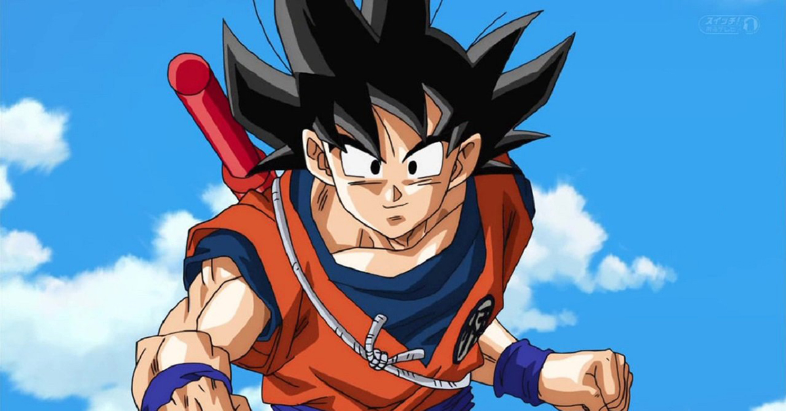
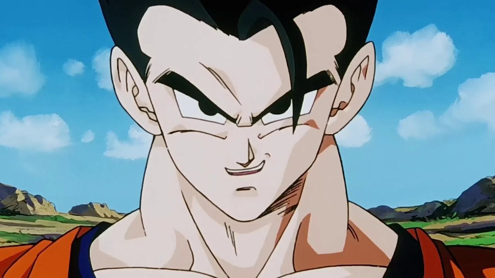
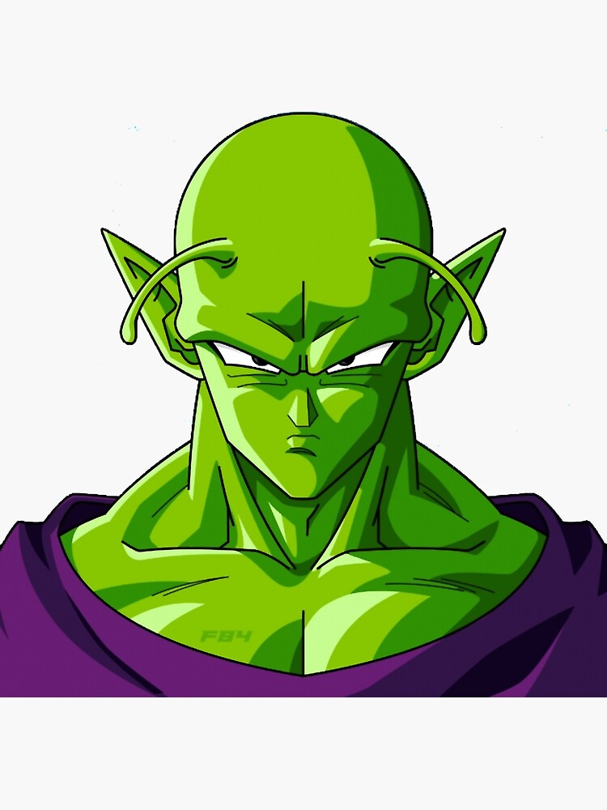
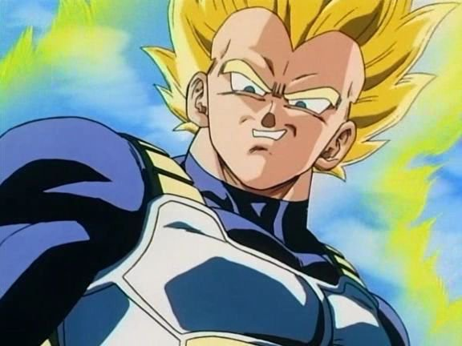
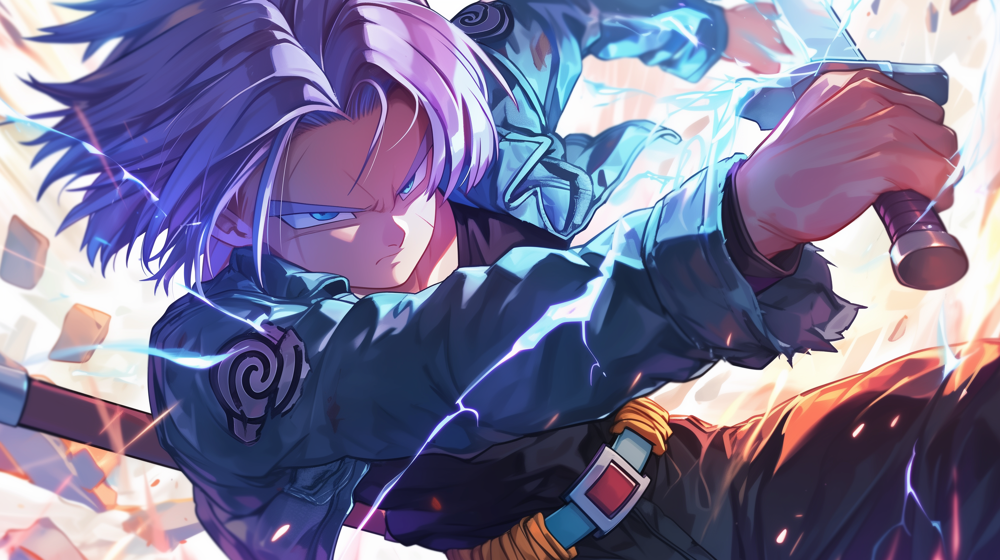
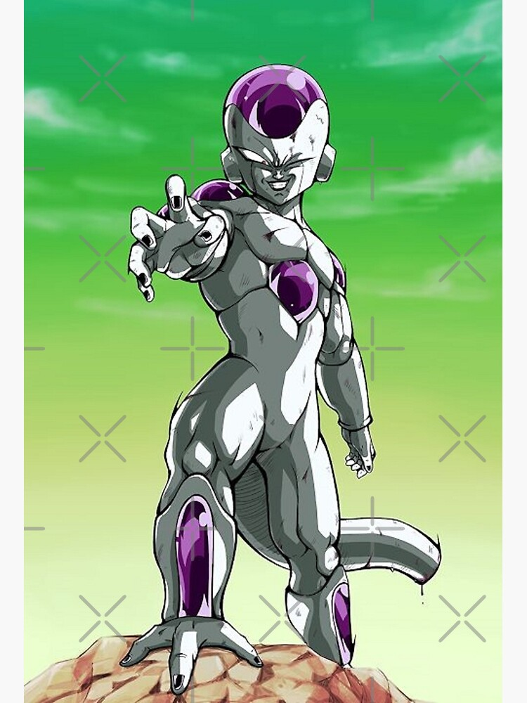
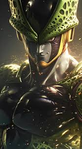
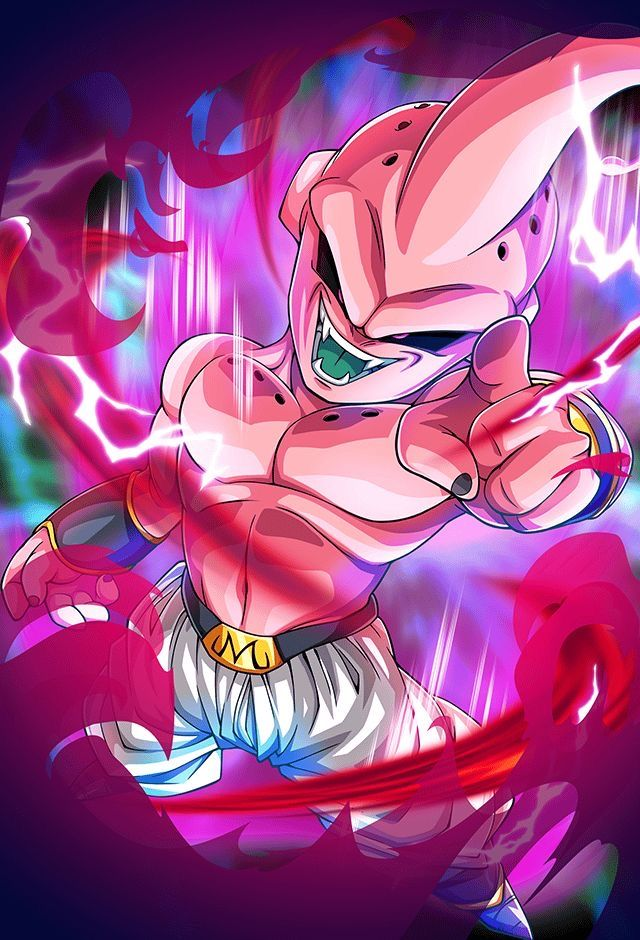
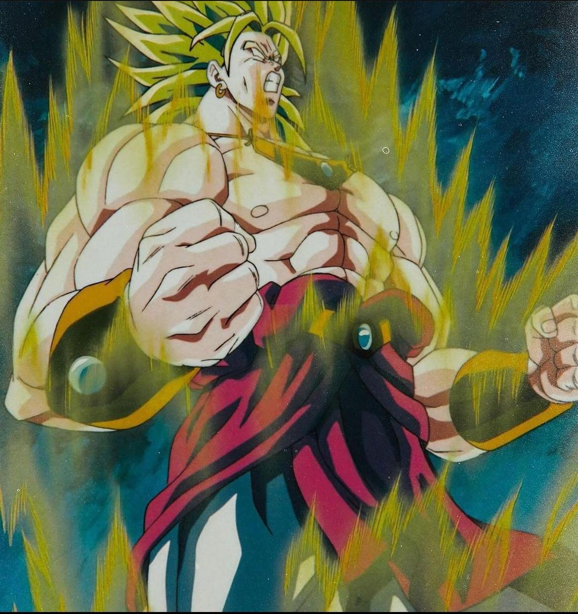
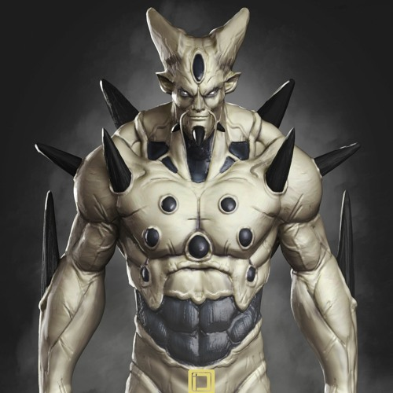

Son Goku

Il a des cheveux noirs hérissés qui ne changent jamais tout au long de l'histoire. Il possède une queue, mais il se l'est fait couper par Puerh alors qu'il était transformé en Singe Géant.
Statistiques
- Force: 9000
- Vitesse: 8000
- Ki: 10000
- Transformation: Super Saiyan
Son Gohan

Premier fils de Son Goku et de Chichi, son potentiel de puissance surpasse de loin celui de son père.
Statistiques
- Force: 8500
- Vitesse: 7500
- Ki: 9500
- Transformation: Mystic
Piccolo

Stratège sage et expert, Piccolo devient plus tard un membre permanent des Z-Fighters.
Statistiques
- Force: 7000
- Vitesse: 6500
- Ki: 8000
- Transformation: Makankosappo
Végéta

Prince des Saiyans, il est introduit comme un antagoniste avant de devenir un allié des héros.
Statistiques
- Force: 8800
- Vitesse: 8200
- Ki: 9500
- Transformation: Super Saiyan Blue
Trunks

Trunks du futur vient du futur pour sauver Son Goku d'une maladie mortelle.
Statistiques
- Force: 8000
- Vitesse: 7800
- Ki: 8500
- Transformation: Super Saiyan
Frieza

Freezer est l'un des antagonistes majeurs de la licence Dragon Ball.
Statistiques
- Force: 9500
- Vitesse: 9000
- Ki: 10000
- Transformation: Forme Finale
Cell

Cell était un bio-organisme humanoïde créé pour devenir le combattant ultime.
Statistiques
- Force: 9000
- Vitesse: 8500
- Ki: 9500
- Transformation: Parfaite
Majin Boo

Majin Boo est l'un des antagonistes principaux du manga Dragon Ball.
Statistiques
- Force: 9800
- Vitesse: 7500
- Ki: 9000
- Transformation: Boo Malin
Broly

Broly est le Super Saiyan Légendaire, ayant un physique impressionnant.
Statistiques
- Force: 10000
- Vitesse: 9000
- Ki: 11000
- Transformation: Super Saiyan Légendaire
Omega Shenron

Omega Shenron est né de l'absorption des Dragon Balls par Ī Shinron.
Statistiques
- Force: 10000
- Vitesse: 9500
- Ki: 12000
- Transformation: Shenron Ultime